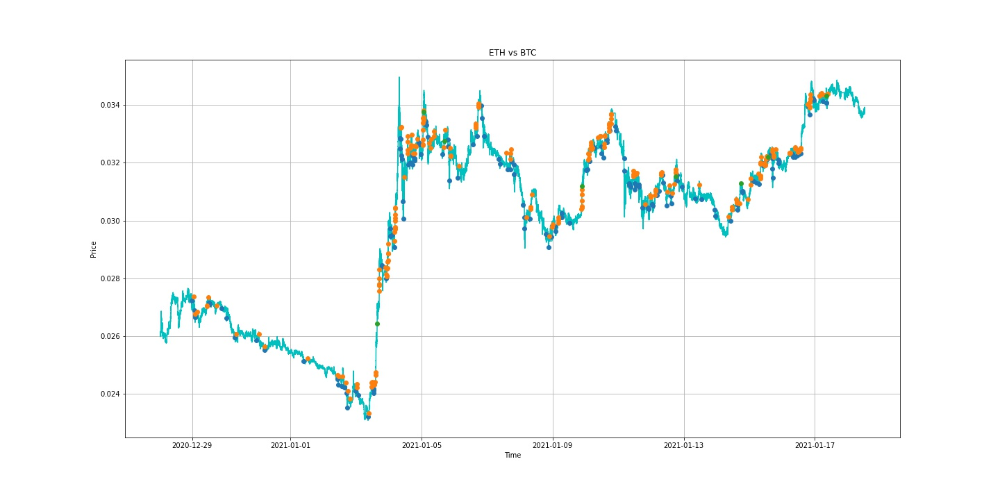

Principales Ventajas
Hace uso de una estrategia ya probada
Se aplica una estrategia basada en indicadores estadísticos que ha estado operando por casi dos años con excelentes resultados. Hacer uso de ella disminuye la curva de aprendizaje al permitirte invertir con una estrategia compleja como lo haria un experto en el mercado de criptomonedas.
El proceso está completamente automatizado
No Necesitas invertir horas y horas analizando el mercado, buscando oportunidades, el sistema esta 24/7 haciendolo por ti.
Lo cual le permite aprovechar las variaciones en el mercado.
Ademas aplicar la estrategia de forma automatica evita decisiones erroneas tomadas en base a emociones como puede ser venta por panico en escenarios bajistas
o la avaricia en escenarios alcistas, que pueden llevar a grandes perdidas.
La estrategia aplicada disminuye el riesgo
El sistema se mantiene realizando compras y ventas todo el tiempo, al vender lo que hace es cobrar la ganancia del intercambio.
De esta forma se mantiene fuera del mercado esperando a la siguiente oportunidad, disminuyendo la exposicion al riesgo.
Una parte de los intercambios se realizan entre criptomonedas y tether
y otra parte contra bitcoin. Tener parte del capital en tether brinda estabilidad y disminuye el riesgo.
*Tether es una criptomoneda que tiene la propiedad de mantener su precio fijo a un dolar, usualmente se representa como "usdt".
Es un sistema flexible
A diferencia de un negocio convencional no es necesario que rentes un local, compres mobiliario e insumos y contrates personal. Tampoco es necesario que esperes meses o años para obtener beneficios, desde el dia uno puedes ver resultados, ademas te permite retirar fondos en cualquier momento.
Selección del portafolio de criptomonedas
El sistema opera con diferentes criptomonedas que han sido previamente seleccionadas en base a un detallado análisis y han pasado por un periodo de pruebas.
*Se puede considerar agregar otra criptomoneda en el portafolio a petición del usuario.
Medidas de Seguridad
El sistema opera con Binance como casa de cambio, porque ofrece las siguientes ventajas: un mercado grande, listado amplio de criptomonedas y baja comisión por transacción. Estas son las medidas de seguridad que protegen tu inversión al operar con Binance a través del sistema:
- La cuenta de Binance esta a tu nombre y tu tienes completo control sobre ella.
- El sistema puede hacer intercambios (trading) pero no puede hacer retiros.
- Binance cuenta con un seguro the Secure Asset Fund for Users - SAFU, es un seguro creado para respaldar los fondos de los usuarios en caso de emergencia.
Estrategia
En base a indicadores estadísticos el sistema es capaz de identificar la tendencia del mercado: alcista, neutro o bajista.
Los parametros de compra y venta se ajustan de acuerdo a la tendencia. Dentro de la tendencia es capaz de comprar en los puntos mínimos y vender en los máximos.
Para explicar su funcionamiento analicemos cómo se comporta en las tres distintas tendencias.
En las graficas pueden observarse las compras (puntos azules) y las ventas (puntos amarillos).
Vamos a tomar como caso de estudio el intercambio entre Ethereum (ETH) y Bitcoin (BTC).
Mercado Alcista
El escenario más sencillo para obtener ganancias es el mercado alcista. En este escenario las condiciones para lanzar una compra se relajan,
el porcentaje de ganancia y el monto de compra aumentan ya que hay mayor oportunidad de venta.
Realizar compras y ventas constantemente disminuye el riesgo en caso de caída del precio ya que el sistema habrá tomado la ganancia previamente.
Cuando se identifica un cambio de tendencia a la baja se disminuyen las compras, como puede verse en la parte final de la gráfica.
Mercado Neutro
En un escenario neutro el punto de entrada y salida del mercado son muy similares, en la gráfica puede verse que al inicio y final del periodo el precio está alrededor de 0.031.
Con un enfoque tradicional este escenario no generaría ganancias, sin embargo, con nuestra estrategia el sistema aprovecha los mínimos y máximos presentados durante el periodo.

Mercado Bajista
En este escenario el sistema ha detectado un cambio de tendencia al inicio del periodo y por lo tanto las condiciones de compra se vuelven más estrictas y disminuye el monto de compra.
En la gráfica puede observarse cómo incluso con el mercado a la baja el sistema logra vender, obteniendo una ganancia. El monto no vendido nos da un precio
promedio entre el punto maximo y minimo. El precio promedio más las ganancias obtenidas disminuyen la diferencia con el precio inicial.
En este caso el precio disminuyó desde el punto más alto 0.0275 hasta 0.0232 que representa una variación aproximada del 15%, pero gracias a la estrategia, la diferencia entre el precio
promedio más las ganancias en relación al precio inicial se reducen en relación 3:1 aproximadamente, en este caso alrededor del 5% en lugar del 15%.
Estas medidas nos permiten soportar la volatilidad del mercado.
Periodo completo
Veamos como luce el mercado en el periodo de tiempo que contiene los tres escenarios. Podemos observar como la actividad disminuye en un mercado bajista y se reactiva al subir los precios.
Resultados
La primera versión del sistema fue liberada en mayo del 2019. Definimos un caso de estudio el cual se mantiene con una cantidad fija, es decir,
no se han agregado ni sacado fondos desde entonces para medir su rendimiento.
El monto inicial fue de 2700 usdt, se han obtenido ganancias de alrededor del 130%, es decir, un 7% mensual en promedio.
¡Son excelentes resultados y todo es automatico!
El sistema se ha mantenido en constante mejora, por lo cual se esperan resultados incluso mejores en el futuro cercano. Ademas de las mejoras que se han agregado desde 2019 en la operación del sistema, existen dos medidas en particular que pueden mejorar los resultados significativamente:
-
Los resultados mostrados se han obtenido de intercambiar criptomonedas por usdt, sin embargo, si el intercambio se realiza contra bitcoin las ganancias serán incluso mejores.
Por ejemplo, si tienes 10 btc, con valor de 1 usdt cada uno y los intercambias por otra moneda que te da un 20% de ganancia al final tendrás 12 btc, pero si además esos 12 btc
ahora valen 2 usdt en lugar de 1 usdt, tendrás un total de 24 usdt.
Por el contrario si baja y en lugar de valer 1 usdt vale 0.5 usdt tendras 6 usdt en lugar de 5 usdt. Realizar el intercambio contra bitcoin supone un riesgo extra. El objetivo es obtener un punto medio. Podemos alcanzarlo intercambiando algunas criptomonedas contra usdt, como hasta ahora y otras, las que han demostrado tener el mejor crecimiento, se intercambiaran contra bitcoin. -
Se han realizado pruebas de apalancamiento, es decir, si tienes 10 usdt, Binance puede prestarte 10 usdt más, en este caso tendrías un apalancamiento de 2:1.
Esta medida puede aumentar las ganancias, pero también el riesgo. Por ese motivo se aconseja un apalancamiento menor o igual al 50% de los fondos disponibles. Si tienes un total de 10 usdt tomaras 5 usdt de apalancamiento, lo cual te permitirá operar como si tuvieras 15 usdt en total. De nuevo el objetivo es encontrar un punto medio entre maximizar las ganancias y controlar el riesgo.
*Estas medidas son opcionales, se han realizado pruebas obteniendo mejoras en los resultados. El sistema esta listo para hacer intercambios contra btc y se esta trabajando para automatizar el proceso de apalancamiento.